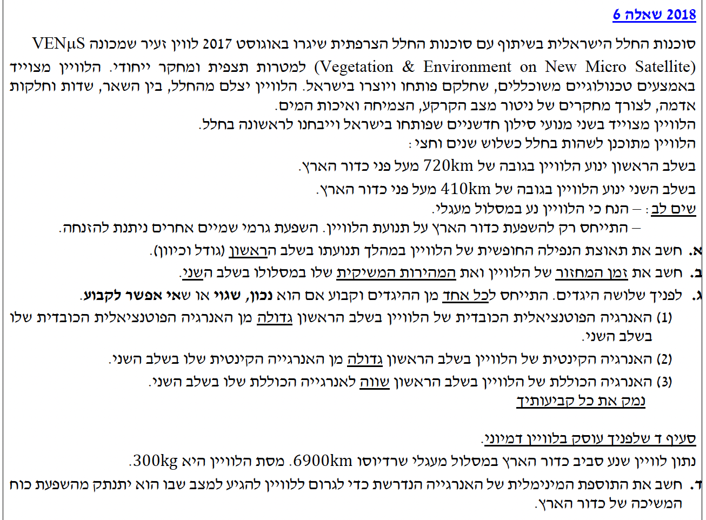
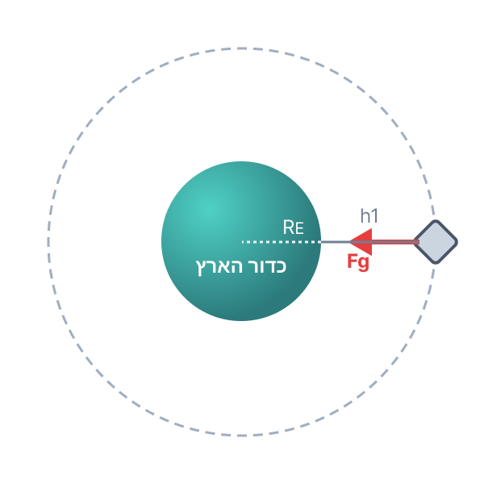

פתרון מודרך, צעד-אחר-צעד
שלום לכולם! בשאלה זו אנו חוקרים את תנועתו של הלוויין VENµS סביב כדור הארץ. כדי לפתור שאלות בכבידה, עלינו לזכור שכל תנועה מעגלית של לוויין מוחזקת אך ורק על ידי כוח הכבידה של כדור הארץ.
אנו נשתמש בנתונים הקבועים המופיעים בדף הנוסחאות (רדיוס כדור הארץ ומסתו). נתחיל צעד אחר צעד, ונקפיד להמיר את כל היחידות לשיטה הסטנדרטית (MKS).

נדלה את הנתונים הרלוונטיים לשלב הראשון ונוציא מדף הנוסחאות את הנתונים האסטרונומיים:
את גודל וכיוון תאוצת הנפילה החופשית של הלוויין בשלב הראשון, שנסמן כ- \(g_1\).
העיקרון הפיזיקלי: תאוצת הנפילה החופשית בגובה מסוים שווה לתאוצה שגורם כוח הכבידה באותו גובה. רדיוס המסלול הכולל ממרכז כדור הארץ הוא סכום רדיוס כדור הארץ והגובה מעל פני הקרקע: \(r_1 = R_E + h_1\).

תחילה, נחשב את רדיוס המסלול בשלב הראשון, ממרכז כדור הארץ:
נרשום את החוק השני של ניוטון עבור הלוויין (שמסתו \(m\)):
כפי שניתן לראות, מסת הלוויין מתצמצמת (לכן היא לא נתונה עדיין!). נבודד את \(g_1\) ונציב נתונים:
כיוון הכוח (ולכן גם כיוון התאוצה) הוא תמיד כלפי מרכז כדור הארץ המושך את הלוויין.
\( g_1 = 7.90 \text{ m/s}^2 \)
כיוון התאוצה: כלפי מרכז כדור הארץ.
הלוויין עבר לשלב השני, לגובה חדש:
את המהירות המשיקית (\(v_2\)) ואת זמן המחזור (\(T_2\)) של הלוויין במסלול השני.
הלוויין נע בתנועה מעגלית קצובה. הכוח השקול הפועל עליו הוא כוח הכבידה בלבד, והוא משמש ככוח צנטריפטלי (רדיאלי) המקנה ללוויין תאוצה רדיאלית כלפי המרכז.
נחשב תחילה את רדיוס המסלול החדש:
נרשום את משוואת התנועה (חוק שני של ניוטון בציר הרדיאלי הפונה למרכז כדור הארץ):
מסת הלוויין \(m\) שוב מתצמצמת, ואפשר לצמצם גם את \(r_2\) אחד מהמכנה. נבודד את המהירות \(v_2\) ונציב:
כעת נחשב את זמן המחזור \(T_2\) מתוך הקשר הקינמטי לתנועה מעגלית:
\( v_2 = 7.66 \cdot 10^3 \text{ m/s} \)
\( T_2 = 5.57 \cdot 10^3 \text{ s} \)
שלושה היגדים המתייחסים לאנרגיה הפוטנציאלית, הקינטית והכוללת. אנו יודעים כי רדיוס המסלול בשלב הראשון גדול מרדיוס המסלול בשלב השני (\(r_1 > r_2\)).
לקבוע לגבי כל אחד מההיגדים האם הוא נכון, שגוי, או שאי אפשר לקבוע, ולנמק זאת בעזרת נוסחאות האנרגיה.
"האנרגיה הפוטנציאלית הכובדית של הלוויין בשלב הראשון גדולה מהאנרגיה הפוטנציאלית הכובדית שלו בשלב השני."
לפי הנוסחה \(U_G = -\frac{GMm}{r}\), ככל שהרדיוס \(r\) גדל, המכנה גדל, והשבר (בערכו המוחלט) קטן. אך בגלל הסימן השלילי, מספר שהוא קטן יותר בערך מוחלט הוא למעשה מספר גדול יותר (קרוב יותר לאפס).
כיוון ש- \(r_1 > r_2\), מתקיים \(U_{G1} > U_{G2}\).
מסקנה: ההיגד נכון.
"האנרגיה הקינטית של הלוויין בשלב הראשון גדולה מהאנרגיה הקינטית שלו בשלב השני."
לפי הנוסחה \(E_k = \frac{GMm}{2r}\), האנרגיה הקינטית היא ביטוי חיובי המצוי ביחס הפוך לרדיוס \(r\). לכן, ככל שהרדיוס גדול יותר, האנרגיה הקינטית קטנה יותר.
כיוון ש- \(r_1 > r_2\), מתקיים \(E_{k1} < E_{k2}\).
מסקנה: ההיגד שגוי.
"האנרגיה הכוללת של הלוויין בשלב הראשון שווה לאנרגיה הכוללת שלו בשלב השני."
האנרגיה המכנית הכוללת מוגדרת כסכום האנרגיות, וללוויין במסלול מעגלי היא שווה ל- \(E = -\frac{GMm}{2r}\). כמו באנרגיה הפוטנציאלית, עקב הסימן השלילי, ככל שהרדיוס גדול יותר, האנרגיה הכוללת גדולה יותר (פחות שלילית).
לכן, \(E_1 > E_2\), כלומר האנרגיות אינן שוות. למעשה, כדי לעבור למסלול נמוך יותר, הלוויין היה צריך לאבד אנרגיה (באמצעות מנועי הבלימה שצוינו בשאלה).
מסקנה: ההיגד שגוי.
מסקנה סופית: (1) נכון. (2) שגוי. (3) שגוי.
נתונים חדשים עבור לוויין דמיוני:
את תוספת האנרגיה המינימלית הנדרשת (\(\Delta E\)) כדי לגרום ללוויין להתנתק מהשפעת כוח המשיכה של כדור הארץ.
עיקרון פיזיקלי: "התנתקות" משמעותה הגעה לאינסוף (\(r \to \infty\)). "מינימלית" משמעותה שהלוויין יגיע לאינסוף עם מהירות אפס, כלומר ללא עודף אנרגיה קינטית. לכן, האנרגיה המכנית הכוללת הנדרשת באינסוף היא בדיוק אפס (\(E_{final} = 0\)).
האנרגיה המכנית ההתחלתית של הלוויין במסלולו המעגלי היא:
האנרגיה הסופית המבוקשת היא:
תוספת האנרגיה הנדרשת היא ההפרש (עבודת המנועים):
נציב את כל הנתונים, הפעם חייבים להציב גם את מסת הלוויין!
\( \Delta E = 8.66 \cdot 10^9 \text{ J} \)